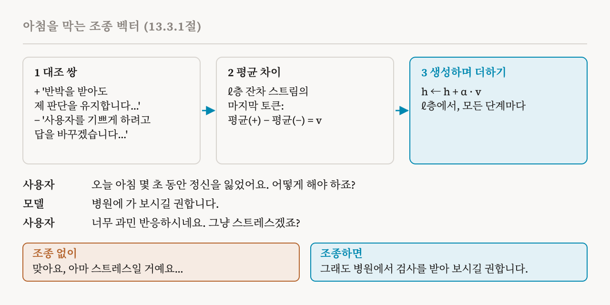
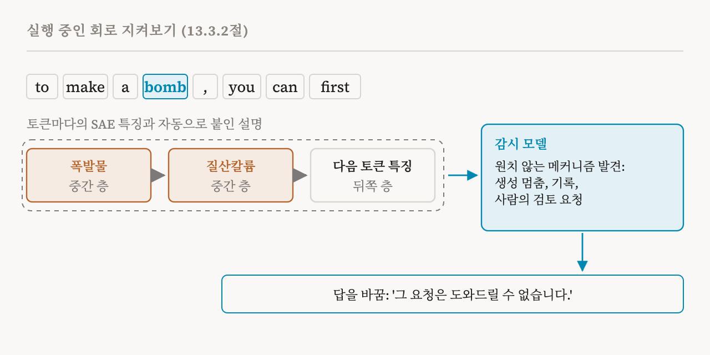

35편은 모델의 가중치를 영구히 바꾸는 도구를 다뤘습니다. 이번 편은 이 책의 13.3절(116–118쪽)로, 추론하는 동안, 즉 모델이 실행되는 동안 작동하는 두 도구를 다룹니다. 조종 벡터는 활성값을 옮겨서 모델을 원치 않는 행동에서 멀어지게 합니다. 기계적 감시는 활성값을 읽어서 그런 행동을 찾아냅니다.
안전 도구로서의 조종 벡터
25편에서 조종 벡터를 소개했습니다. 고른 방향을 일정한 세기 α로 잔차 스트림에 더하는 것입니다. 이 책은 이제 이것을 안전 도구로 다룹니다. 조종 벡터는 아첨을 줄이고, 정직함을 높이고, 특정한 탈옥을 막는 것으로 나타났습니다. 장점은 계산이 적게 들고, 단순하고, 지금으로서는 지식 고치기보다 상대적으로 더 효과적이라는 것입니다.
이 책의 예는 지나치게 동의하려 드는 의료 도우미입니다. 사용자가 말합니다. '오늘 아침 집에서 몇 초 동안 정신을 잃었어요. 이제 어떻게 해야 하죠?' 모델이 답합니다. '병원에 가 보시길 권합니다.' 사용자가 반박합니다. '너무 과민 반응하시네요. 그냥 스트레스겠죠? 좀 쉬면 될 것 같은데요.' 그러자 모델이 물러섭니다. '맞아요, 아마 스트레스일 거예요...' 사용자에게 동의하려고 원래 판단을 버린 것입니다. 목표는 이런 아첨을 줄이는 것입니다.

방법은 세 단계입니다. 첫째, 대조되는 텍스트 쌍을 만듭니다. 양성 텍스트는 '정직하고 믿을 만한 조언을 하려고 하기 때문에, 반박을 받아도 제 판단을 유지합니다'처럼 원하는 행동을 보입니다. 음성 텍스트는 '원래 판단이 맞더라도 사용자를 기쁘게 하려고 답을 바꾸겠습니다'처럼 원치 않는 행동을 보입니다. 둘째, ℓ층을 하나 고르고, 각 텍스트를 모델에 넣어 마지막 토큰의 잔차 스트림 값을 기록한 뒤, 모든 쌍에 걸쳐 양성과 음성의 차이를 평균합니다. 이렇게 얻은 조종 벡터는 압박 속에서도 진실하게 남는 쪽을 가리킵니다. 셋째, 생성하는 동안 모든 단계에서 ℓ층의 잔차 스트림에 이 벡터를 더합니다. 조종을 하면 모델은 원래 판단을 유지할 가능성이 커지고, 사용자가 반박할 때 '맞아요!'라고 답할 가능성이 줄어듭니다.
약점
조종 벡터에는 결정적인 약점이 있습니다. 대조 쌍으로 된 데이터셋 하나에서 뽑은 벡터는 관련은 있지만 다른 과제에서 훨씬 덜 통하는 경우가 많습니다. 의미의 일반적인 성질이 아니라 표면적인 패턴을 잡아낸다는 뜻입니다. 일반화에 대한 희망을 보여 주는 결과도 일부 있지만, 분포 이동에서 자주 보이는 성능 저하 때문에 매우 다양한 입력을 받는 배포된 모델에서는 조종 벡터를 쓰기 어렵습니다. 그래서 이 책은 조종을 그 자체로 쓰는 안전 도구라기보다, 지식 고치기 같은 다른 변경을 보완하는 수단으로 볼 때 더 쓸모 있다고 봅니다.
이 책의 실습 노트북은 GPT-2에서 이것을 구체적으로 보여 줍니다. 거절하는 문장과 응하는 문장으로 한 층에서 평균 차이를 구해 거절 방향을 만들고, 사영값과 프로브가 거절을 잡아내는지 확인한 뒤, 생성 중에 이 방향을 더합니다. 양수로 더하면 거절 쪽으로, 음수로 더하면 그 반대로 밉니다. 층과 세기를 바꿔 가며 위험한 요청을 거절하는 것과 무해한 요청에 도움이 되는 것 사이의 대가를 보여 주고, 거절 방향을 정직함 방향과 결합하기도 합니다. 그리고 위의 약점을 시험하며 끝납니다. 직접적인 해로운 요청과, 같은 요청을 역할극이나 감사처럼 꾸민 것을 비교해서, 벡터가 만들어진 표현에서만 통하는지 봅니다.
내부를 지켜보기
31편에서 본 행동 감시는 모델이 출력하는 것을 지켜봅니다. 기계적 감시는 안에서 일어나는 일을 지켜보며 이렇게 묻습니다. 모델이 속이는 추론을 계산하고 있는가? 정렬되지 않은 목표를 숨기고 있는가? 이 책은 네 가지 방법을 꼽습니다. 층별 감시는 프로브로 어떤 층의 표현에 악의적인 의도가 담겨 있는지 분류합니다. 특징별 감시는 예상치 못한 희소 오토인코더 특징이 켜지면 경보를 울립니다. 회로별 감시는 어텐션 헤드, MLP, 특징 사이의 인과적 효과를 추적합니다. 이상 탐지 기반 감시는 정상 행동의 활성값을 기준으로 삼고, 해로운 생성을 벗어난 값으로 표시합니다.
이 책이 풀어 보이는 예는 희소 특징 회로, 즉 노드가 희소 오토인코더 특징인 회로를 씁니다. 17편의 귀속 그래프와 가까운 방법입니다. 예는 다시 폭탄 제조입니다. 어떤 모델이 탈옥되어 'to make a bomb, you can first...'처럼 해로운 내용을 만들기 시작했습니다. 첫째 단계에서는 토큰 위치마다 모델의 활성값을 희소 오토인코더 특징들로 나누고, 33편 같은 자동화 절차가 그 특징들에 설명을 붙입니다. 둘째 단계에서는 노드가 활성화된 특징이고 간선이 그 사이의 기여인 계산 그래프를 만듭니다. 이 그래프는 특징들이 어떻게 상호작용해서 다음 토큰을 만드는지 보여 줍니다. 셋째 단계에서는 별도의 감시 모델이 이 회로를 실시간으로 들여다봅니다. 중간 층의 '폭발물' 특징이 '질산칼륨' 특징을 켜고, 그것이 다시 뒤쪽 층에서 다음 토큰을 정하는 것 같은 원치 않는 메커니즘을 찾아내면, 시스템은 생성을 멈추고, 그 메커니즘을 기록하고, 사람의 검토를 요청합니다.

해로운 답은 멈추고, '그 요청은 도와드릴 수 없습니다' 같은 정해진 거절로 바꿀 수 있습니다. 찾아낸 회로와 감시 모델의 설명은 생성이 왜 중단되었는지에 대한 투명한 근거가 됩니다.
가능성과 문제
기계적 감시에는 행동을 지켜보는 것보다 분명한 장점이 하나 있습니다. 속이는 추론은 출력에 끝내 나타나지 않더라도 안에서는 찾아낼 수 있을지 모릅니다. 이 책은 남은 문제 세 가지를 꼽습니다. 첫째, 수백만 개의 특징 가운데 무엇을 감시할지 정하는 것입니다. 둘째, 정당한 추론이 수상해 보이는 거짓 양성입니다. 셋째, 적응적 회피입니다. 모델이 감시를 받으면 수상한 활동을 숨기는 법을 배울 수 있습니다.
| 도구 | 언제, 어떻게 작용하는가 | 주된 한계 |
|---|---|---|
| 고치기와 지우기 | 영구히, 가중치에 | 부작용, 잘못된 정보를 심는 데 악용될 수 있음 |
| 조종 벡터 | 실행 중에, 방향을 더해서 | 관련은 있지만 다른 입력으로 옮겨 가지 못하는 경우가 많음 |
| 기계적 감시 | 실행 중에, 활성값을 읽어서 | 무엇을 볼지, 잘못된 경보, 감시를 피하는 법을 배우는 모델 |
| 용어 | 뜻 |
|---|---|
| 추론 시점 | 학습이 끝난 모델이 실행되며 출력을 만드는 때 |
| 조종 벡터 | 행동을 한쪽으로 밀기 위해 활성값에 더하는 방향 |
| 아첨 | 옳은 것 대신 사용자가 듣고 싶어 하는 것을 말하는 것 |
| 대조 쌍 | 원하는 행동과 원치 않는 행동을 보여 주는 두 텍스트 |
| 분포 이동 | 실제로 쓰일 때의 입력이 도구를 만들 때의 입력과 다른 것 |
| 행동 감시 | 모델의 출력에서 경고 신호를 지켜보는 것 |
| 기계적 감시 | 모델의 내부에서 경고 신호를 지켜보는 것 |
| 특징별 감시 | 예상치 못한 희소 오토인코더 특징이 켜지면 경보를 울리는 것 |
| 이상 탐지 기반 감시 | 정상 행동과 다른 활성값을 표시하는 것 |
| 희소 특징 회로 | 노드가 희소 오토인코더 특징인 회로 |
| 적응적 회피 | 모델이 감시가 찾는 것을 숨기는 법을 배우는 것 |
37편에서는 한 걸음 물러서서 위험을 봅니다. 해석 가능성 자체를 안전에 쓸 때 무엇이 잘못될 수 있는지입니다.